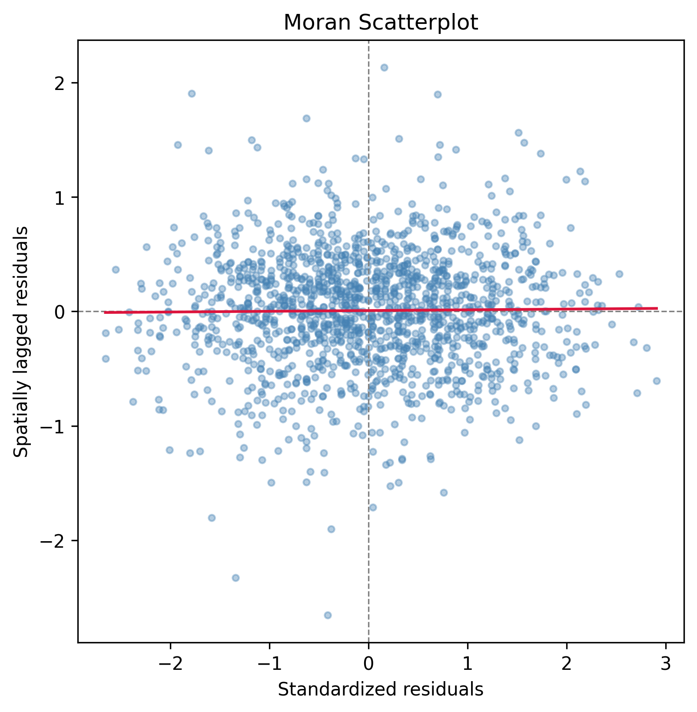

6. Spatial and Temporal Dynamics: Adoption Clustering and Grid Stress Decoupling#
6.1. Research Question#
Does geographic clustering of BTM solar adoption predict measurable differences in ZIP-level grid stress metrics (net-load ramps, curtailment, negative LMPs)?
6.2. Finding: No Strong Relationship#
{kind=link}

Fig. 6.1 Regression residuals show weak spatial clustering (Moran’s I ≈ 0.10, p < 0.05), indicating that ZIP-level adoption patterns do not systematically predict ZIP-level grid stress.#
Regression analysis of ZIP-level adoption density versus ZIP-specific ramp magnitude found r = 0.02 (essentially zero correlation). Moran’s I test for spatial autocorrelation in regression residuals was weak (I ≈ 0.10, p < 0.05), indicating that ZIP-level adoption patterns do not systematically predict ZIP-level grid stress.
6.3. Why?#
Grid stress is a system-wide phenomenon, not a local one:
Aggregate effect dominates: When solar generation across all of California ramps down at sunset, CAISO sees a single system-level event. Whether that solar is concentrated in Riverside or spread across 100 ZIPs, the ramp magnitude is the same.
Utility-scale solar drives the curve: The majority of the duck-curve deepening is driven by utility-scale solar (Mojave Desert, Central Valley), not distributed BTM solar. Utility-scale penetration has grown much faster than BTM.
System operations are aggregate-focused: Grid operators forecast total system ramping need, dispatch generation across the entire interconnection, and manage curtailment system-wide. Local clustering does not affect this system-level optimization.
Data granularity mismatch: System-level CAISO metrics (net load, curtailment, LMP) do not vary by ZIP or even by utility territory. They are invariant across all ZIPs within the CAISO interconnection.
6.4. Implications#
This finding suggests two possibilities:
Grid stress is driven by aggregate penetration, not clustering. Whether solar is concentrated or dispersed, the system-level ramp is the same.
Local distribution-network constraints may exist, but are invisible at system level. Feeder-level voltage and frequency data (not publicly available) would be required to test whether local BTM clustering causes local hosting-capacity limits.
6.5. Data & Methods#
Data: CEC DGStats (ZIP-level), CAISO OASIS (system-level)
Method: ZIP-level fixed-effects panel regression; Moran’s I spatial autocorrelation test
Sample: ~800 ZIPs with ≥1 installation; 2015–2023; ~6,000 ZIP-year observations
Outcome variable: Monthly mean hourly net-load ramp magnitude (MW/hour)
Predictor: Lagged cumulative BTM capacity (kW) per ZIP